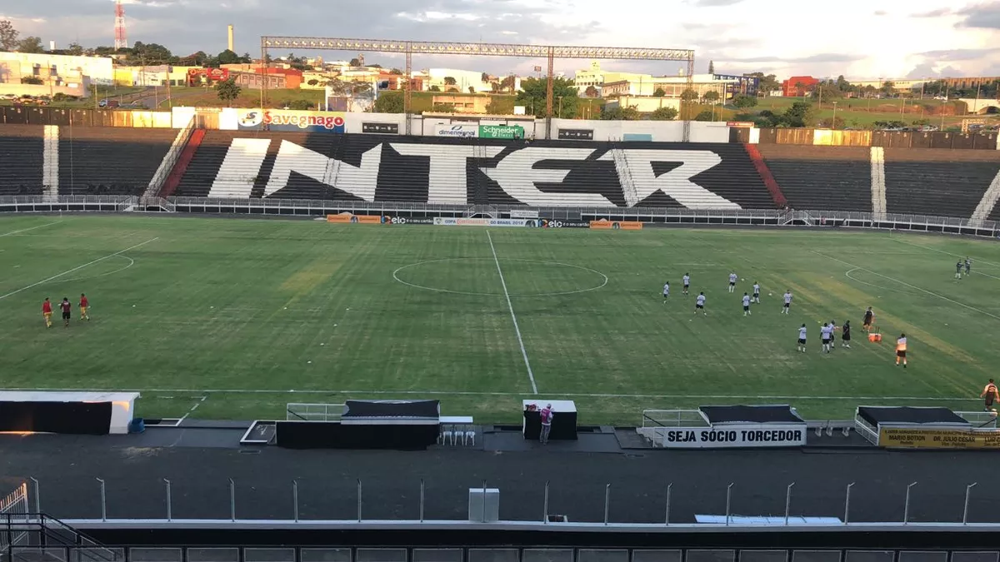
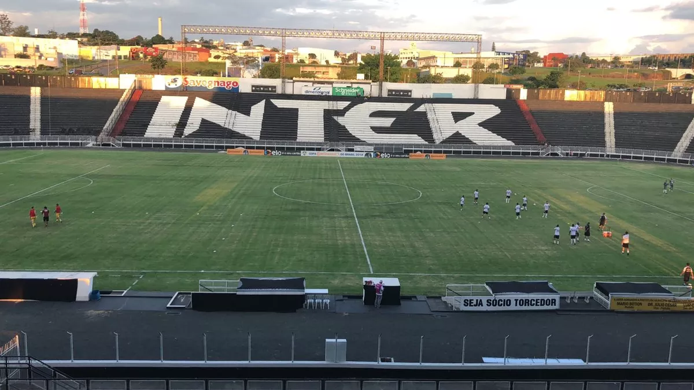

Esportes
Internacional de Limeira
História do time
O Inter de Limeira foi fundado no dia 18 de agosto de 1911, com o nome inicial de Clube Atlético Limeirense. Em seus primeiros anos, o clube se destacou principalmente no cenário estadual, mas teve dificuldades em se firmar em competições mais amplas. O nome "Inter" surgiu posteriormente, e o time passou a ser conhecido como Inter de Limeira. Durante as primeiras décadas, o clube foi conhecido por disputar campeonatos regionais e se consolidou como uma das equipes mais importantes de Limeira. A cidade de Limeira tem uma forte tradição no futebol, e o Inter era um dos representantes desse cenário.
 

Titulos do time
- Campeonato Brasileiro - Série C (1999)
- Campeonato Paulista - Divisão Especial (1986)
- Campeonato Paulista - Série A2 (2004)
- Campeonato Paulista - Série A3 (1995)
- Copa Rio-SP (1991)
- Campeonato Paulista - Interior (1983)
- Campeonato Paulista - Interior (1990)